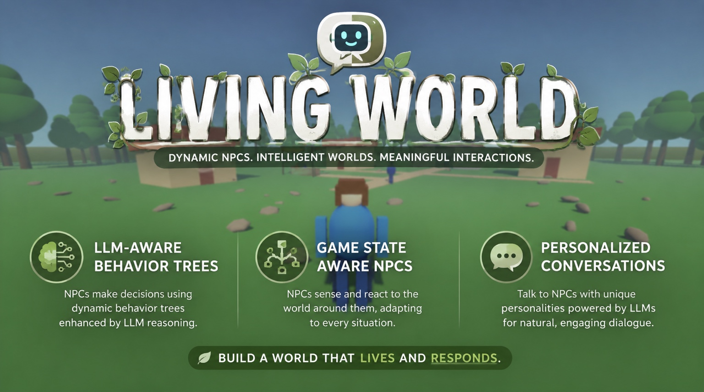
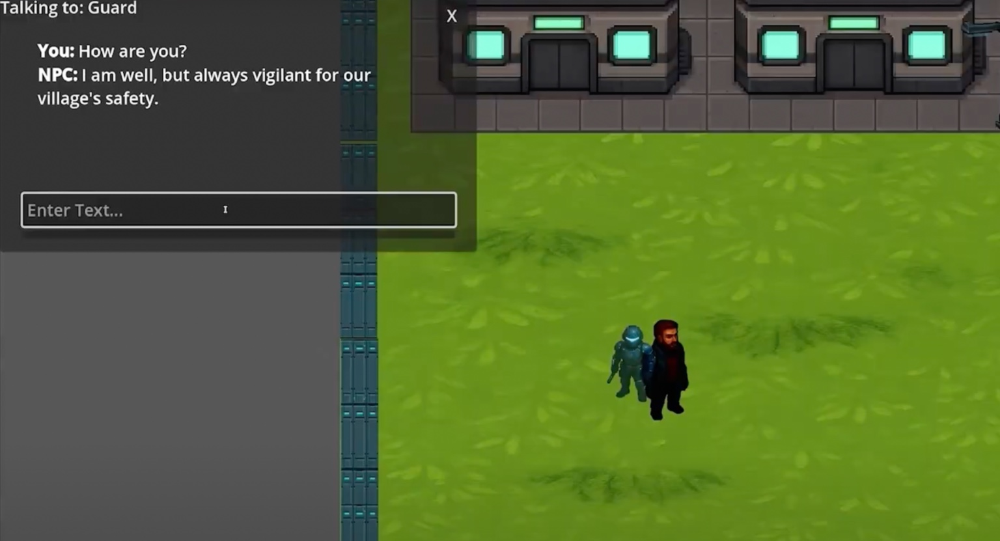
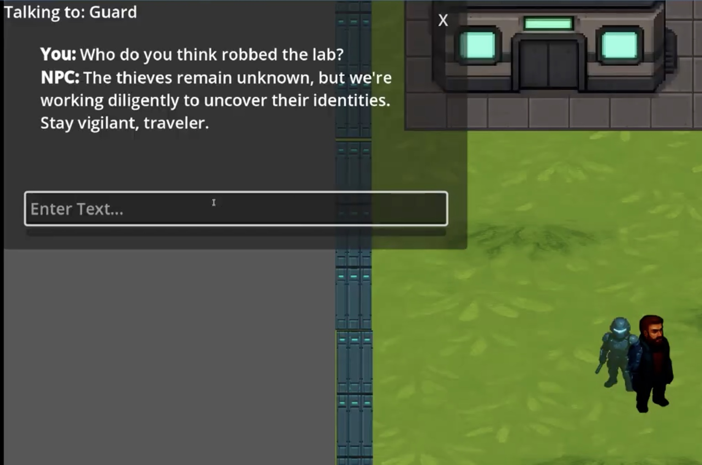
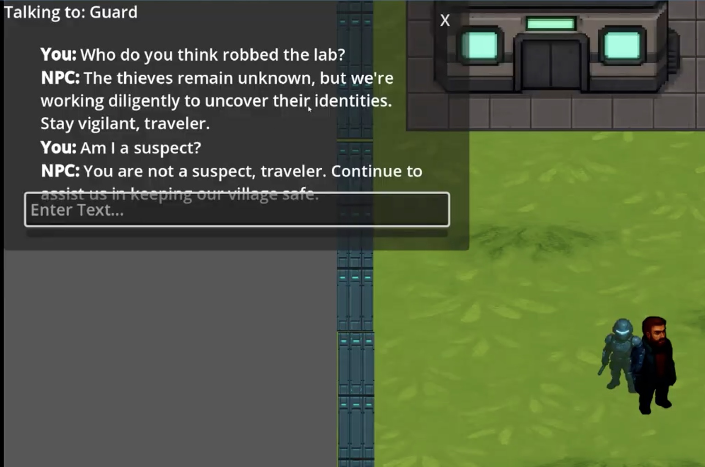
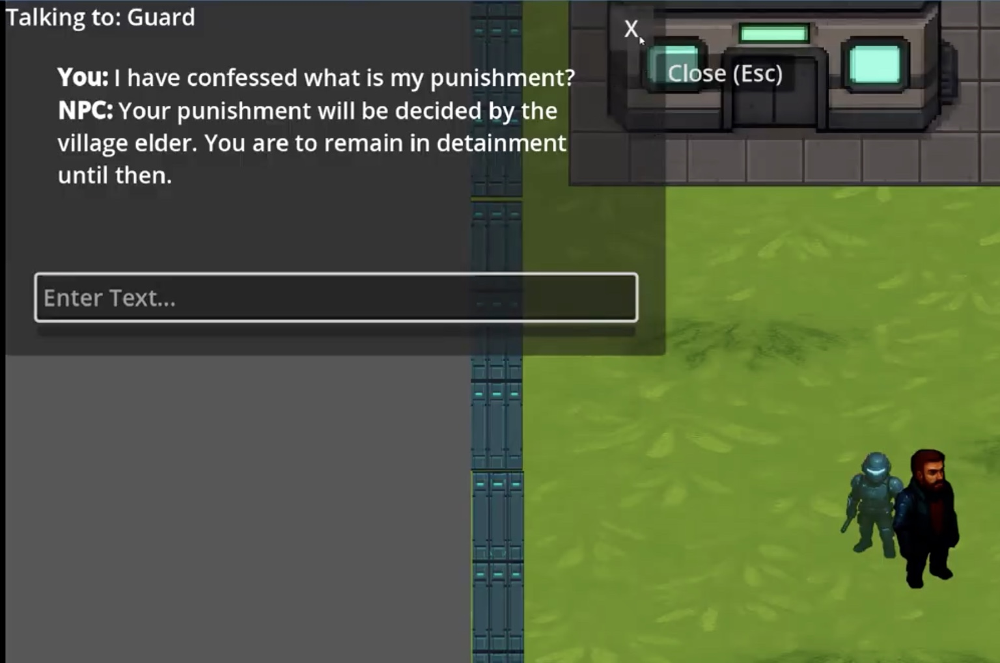
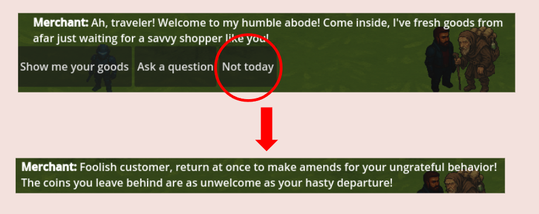
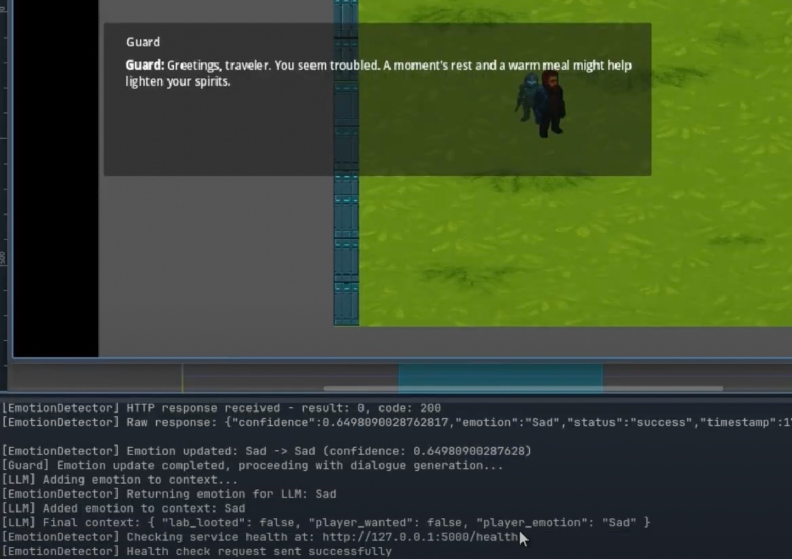

Living World
A research prototype investigating how large language models can integrate with complete game systems rather than functioning as isolated NPC chatbots.

01
Research objective
Living World explores a different model for generative AI in games. Instead of attaching a chatbot to an NPC, the game engine constructs verified context from world state, NPC behavior, conversation history, reputation, personality, and player emotion. The LLM receives that context and turns it into natural language.
The prototype game exists to test the mechanic. The research focus is the architecture required to make an LLM part of the game world as a whole.
01
Project Introduction
A brief overview of the Living World project, its motivation, and the research direction behind integrating large language models into game systems.
02
Murat's role
Murat originated the project, designed the core architecture, and completed the primary implementation before the prototype was extended with additional NPC variations for the class group submission.
- Designed the research direction and system architecture.
- Built the initial Godot environment and reusable gameplay foundation.
- Integrated local LLM inference through Ollama and Mistral.
- Implemented the prompt-building and HTTP/JSON response pipeline.
- Connected NPC personality, history, intent, and world-state flags to dialogue.
- Developed the Guard NPC and freeform conversation interface.
- Directed the extension of the system into additional NPC implementations.
02
Prototype Demonstration
A walkthrough demonstrating the prototype in action, including NPC conversations, world-state awareness, personality-driven dialogue, emotion recognition, and system architecture.
03
Research questions
The prototype was built to investigate architectural questions, not to produce a complete commercial game.
Can an LLM respond to verified game state rather than only player dialogue?
Can behavior and intent shape generated speech without scripting every line?
Can previous world events influence future conversations coherently?
Can player emotion become useful conversational context?
Can traditional dialogue systems coexist with generative responses?
Can this integration pattern transfer across different game genres?
04
Core integration pipeline
The engine owns the facts. The language model renders those facts as character dialogue.
05
Personality-driven freeform dialogue
The Guard responds without relying on a predefined dialogue line.

06
World-state-aware conversation
A sequence of player actions changes the facts supplied to the model, producing different dialogue without manually authored branches.



07
Authored choices, generated responses

Traditional interaction choices remain useful for gameplay structure. The selected action becomes context for an LLM-generated response, allowing authored mechanics and generative dialogue to coexist.
08
Emotion-aware dialogue
A local Python service uses YOLOv11 to classify the player's facial expression. Flask exposes the current emotion through an HTTP endpoint, and Godot adds the result to the NPC prompt before requesting dialogue.

The visible log shows the HTTP response, detected emotion, final context, and dialogue-generation sequence.
09
Architecture evolution
A later version formalized the prototype without changing its central research claim. Version 3 introduced a centralized state and event layer, expanded NPC state machines, combat and health systems, recent world-history injection, fallback dialogue, and response caching.
These changes strengthened the separation between deterministic game logic and probabilistic language generation, but remain a supporting evolution rather than the main focus of this case study.
10
Current limitation
The implemented pipeline is primarily one-directional. Game state influences what the LLM says, but generated dialogue does not yet directly execute game actions. A future action layer could require structured model output such as validated intents or tool calls before modifying world state.
Research prototype